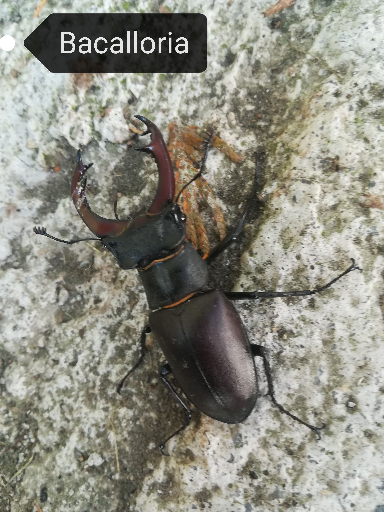

Bacalloria
El ciervo volanteBiología
Es una especie sapro xilófaga. La larva se desarrolla a expensas de la madera desmenuzada y podrida de las distintas especies de quercíneas, aunque se encuentra también en casi todo tipo de frondosas: hayas, olmos, sauces, fresnos, chopos, alisos, tilos, castaños, nogales, moreras y diversos frutales como peral, manzano y cerezo (incluso se ha citado en Europa de algunas resinosas como pinos y tuyas) y aprovecha habitualmente los árboles viejos y los abatidos. Entre los Quercus, tiene marcada preferencia por los de hoja caduca o marcescente; así, utiliza los robles Quercus petraea y Quercus robur en el norte, además del Quercus humilis en Cataluña y Quercus pyrenaica en la meseta castellana y el Sistema Central. El desarrollo larvario dura normalmente cuatro o cinco años. El adulto se transforma en otoño, pero hiberna y no sale al exterior hasta el mes de junio o julio, incluso en agosto en los lugares más fríos de su área de distribución ibérica.
Los escornabois vuelan al atardecer o por la noche, aunque se pueden observar en menor número a cualquier hora del día. De fenología primavero-estival, se pueden ver desde mayo hasta septiembre, si bien los ejemplares ibéricos son más frecuentes durante el mes de julio. Les atrae la savia azucarada y en fermentación vertida por los árboles heridos. Forma parte de la dieta alimentaria de numerosos depredadores; así, diversas aves (arrendajo, alcaudón real, chova piquirroja, rapaces diurnas y nocturnas) y mamíferos (zorro, tejón y gineta) lo cazan cuando pueden, aunque no se conoce que ninguno de ellos haya desarrollado métodos específicos de predación sobre el ciervo volante.
Importancia de los saproxilófagos
Los insectos saproxilófagos juegan un papel significativo en el reciclaje de la madera muerta de los bosques. Las larvas de ciervo volante se alimentan exclusivamente de este recurso. Esto, unido a un ciclo biológico que dura varios años, hace que sean particularmente sensibles a la retirada de madera muerta de nuestras zonas forestales. Por tanto, los podemos considerar como excelentes bioindicadores de la salud de un bosque.
En muchos bosques europeos la madera muerta está a unos niveles críticamente bajos, a menos del 5% del volumen que sería esperable en condiciones naturales, de modo que este índice se convierte en un indicador clave para medir la naturalidad de los ecosistemas forestales. De hecho, en los bosques caducifolios no alterados, la madera muerta puede alcanzar entre el 5 y el 10% del total, o lo que es lo mismo, entre 40 y 200 metros cúbicos por hectárea; esas cifras bajan hasta valores mínimos en los bosques manipulados.
Está científicamente demostrado que los bosques naturales son más estables, saludables y resistentes a las enfermedades, plagas y cambios en las condiciones climáticas que los bosques limpios. Las amenazas más importantes para nuestros bosques, que conllevan una pérdida de diversidad biológica y cambios drásticos en este tipo de ecosistemas, son las siguientes:
- La destrucción de los bosques autóctonos o su sustitución por otras especies, sobre todo coníferas, que provocan una pérdida o una fragmentación del hábitat de muchas especies.
- Los procesos de urbanización o ampliación de zonas urbanas adyacentes, que producen un fuerte impacto negativo que suele estar directamente relacionado con el número de nuevos residentes que se establecen
- La eliminación de árboles viejos, muertos o moribundos y la retirada de las porciones muertas de árboles vivos que aconsejan las técnicas modernas de explotación forestal.